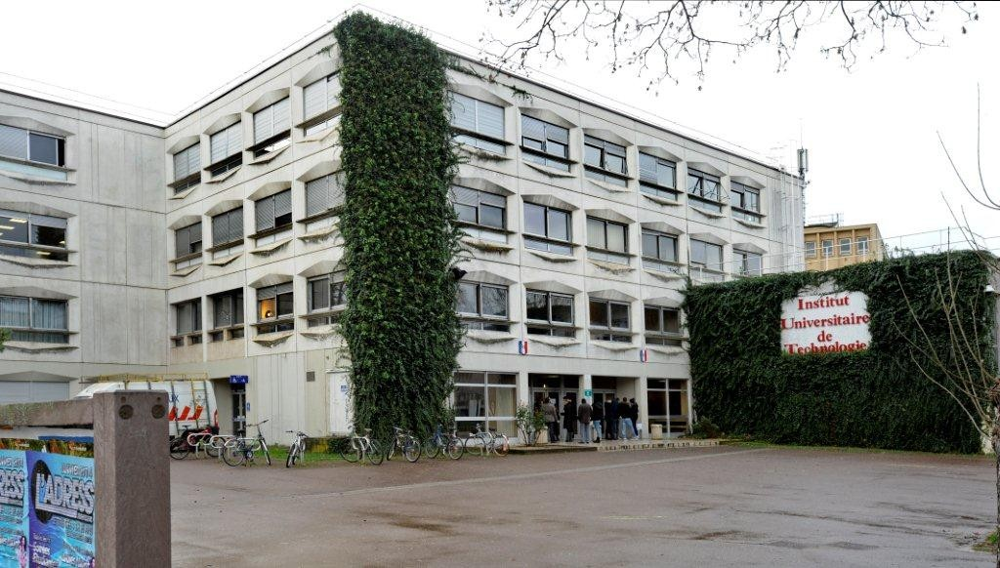
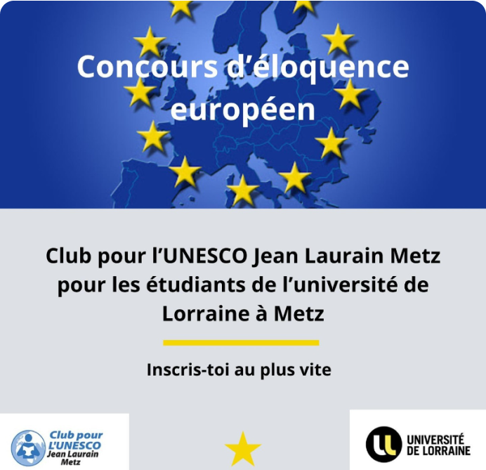
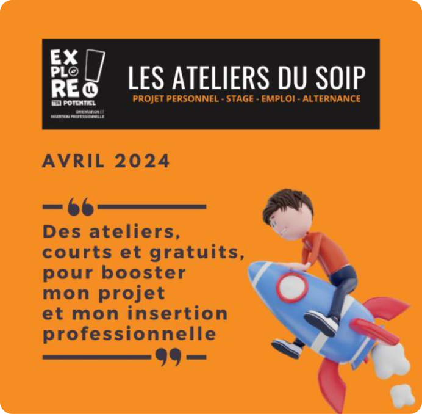
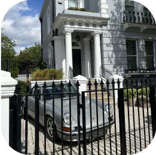
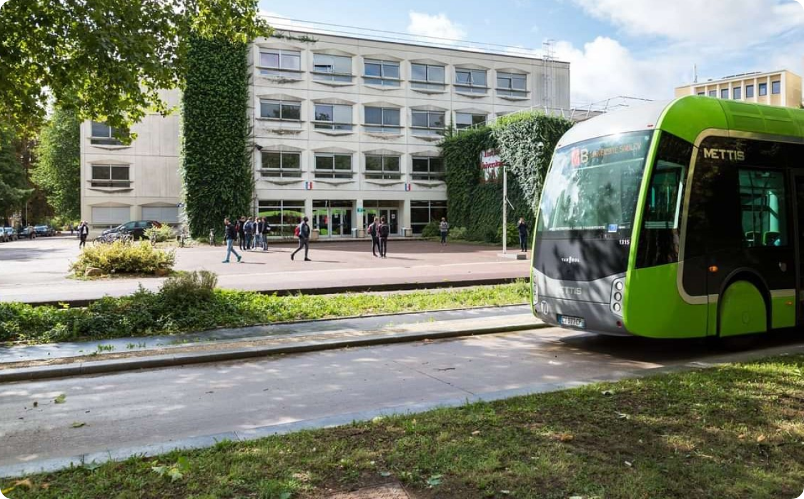

Département Informatique de l’IUT de Metz
Présentation
Le site d’anciens étudiants du département informatique de l’IUT de Metz a pour objectif de rassembler les étudiants du département informatique de l’IUT de Metz afin qu’ils puissent se rencontrer ou se retrouver, échanger entre eux, ainsi que partager des moments conviviaux, et ainsi créer des liens. De plus, ce site a été créé dans le but de partager les événements organisés par le département informatique de l’IUT de Metz, par un ancien étudiant de celui-ci, ou par une personne tierce, et ayant pour but de rassembler des anciens étudiants du département informatique de l’IUT de Metz. Enfin, ce site a pour but de fournir des informations sur le département informatique de l’IUT de Metz et sur l’établissement où il se trouve, à savoir l’IUT de Metz.
Évènements à venir :

Concours d’éloquence
Européen
📢 C'est le moment de faire entendre
votre voix pour l'Europe !
🎙️ Exprimez-vous sur
l'importance de...
Date : 30/05/2024
Horaire
: Non défini
Lieu : Metz

Les ateliers du SOIP d'avril approchent !
Programme :
🚩Partir à l'étranger : étudier, travailler, s'engager grâce
aux programmes...
Date : Jeudi 4 avril 2024
Horaire : de 12h15 à 13h15
Lieu : à distance (via
Teams)

JPO de l’IUT de Metz 🎓✨
🎉 J-1 avant nos portes
ouvertes!🚪
Date : Samedi 17 Février 2024
Horaire : de 09h à 16h
Lieu : IUT de Metz
Annuaire

CHOLLET Thomas
thomaschollet.pro@gmail.com Développeur de jeux
Motion
Twin

AIT BAHA Said
aitbahasaid24@gmail.com
Développeur fullstack
SIUUUU ENTERPRISE
KERBER Alexandre
alexkerber54190@gmail.com
Professeur de Communication
IUT de Metz

MORINON Lilian
lilian.morinon8@etu.univ-lorraine.fr
Joueur de football
Olympique de Marseille
Département Informatique
L'IUT de Metz, faisant partie intégrante de l'Université de Lorraine, est situé dans la ville de Metz, en France. Cet établissement offre une gamme diversifiée de formations techniques et professionnelles dans des domaines tels que les sciences, la technologie, le commerce et le management. Grâce à ses installations modernes et à ses équipements de pointe, l'IUT de Metz crée un environnement propice à l'apprentissage et à la recherche. Ses partenariats étroits avec les entreprises offrent aux étudiants des opportunités de stages, de projets tutorés et d'expériences concrètes dans le monde professionnel. En mettant l'accent sur l'accompagnement personnalisé, l'IUT de Metz veille à ce que les étudiants bénéficient d'un soutien adapté à leurs besoins, favorisant ainsi leur réussite académique et leur insertion professionnelle.
